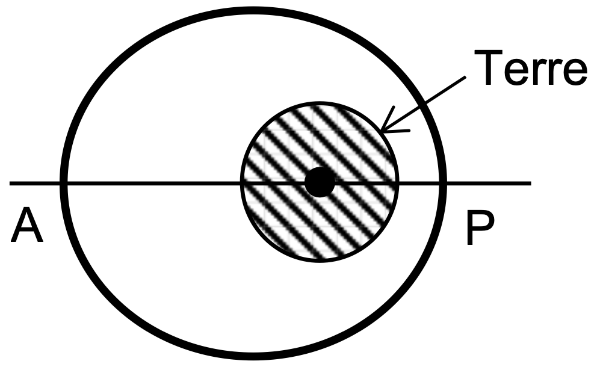
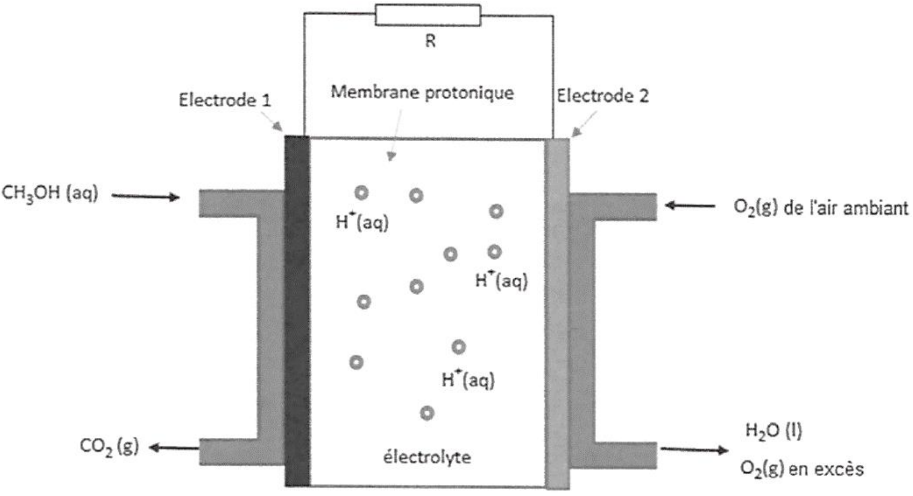

Le projet Janus (Jeunes en Apprentissage pour la réalisation de
Nanosatellites au sein des Universités et des écoles de l’enseignement
Supérieur) a pour objectif de promouvoir les technologies de
l’aérospatial auprès des étudiants des écoles et universités
françaises.
Pour cela, le CNES leur propose de développer et d’envoyer dans l’espace
sous le format "Cubesats", c’est-à-dire de petits systèmes cubiques de
masse comprise entre 1 et 10 kg.
Les satellites X-CubeSat et Spacecube ont été mis au point par des
étudiants de l’école polytechnique, de l’école des mines de Paris et du
BTS du lycée Diderot à Paris. Ils ont été mis en orbite les 17 et 18 mai
2017 depuis la station spatiale internationale et ont pour mission
d’analyser le taux d’oxygène atomique de la thermosphère, partie
supérieure de l’atmosphère.
Données :
masse de la Terre : \(M_T\) = 5,97E24 kg
rayon de la Terre : \(R_T\) = 6400 km
constante universelle de gravitation : \(G\) = 6,67E-11 S.I.
vitesse de la lumière dans le vide : \(c\) = 3,00E8 m s−1
On se place dans le référentiel géocentrique.
Les caractéristiques de l’orbite de Spacecube sont les suivantes :
altitude minimale au point \(P\) : 395 km
altitude maximale au point \(A\) : 402 km
nombre de révolutions par jour : 15.56

Montrer par un calcul d’écart relatif qu’il est possible de considérer que l’orbite de ce satellite est quasi-circulaire. On calculera pour cela le pourcentage d’écart entre les extremums.
on considère pour la suite de l’exercice que l’orbite est effectivement circulaire, d’altitude \(h\)= 400 km.
Exprimer la vitesse \(v\) su satellite en fonction de sa période de rotations \(T\) et du rayon de l’orbite \(R\).
Donner l’expression de l’accélération \(a_N\) du satellite dans le cas d’un mouvement circulaire.
A l’aide de la seconde loi de Newton et des réponses aux questions précédentes, calculer le nombre de révolutions effectuées par jour par ce satellites. Conclure quant à l’approximation d’une orbite circulaire.
La pile au méthanol fait partie des piles à combustibles. Elle est
constituée de deux électrodes en platine, au niveau desquelles se
produisent une réaction d’oxydation et une réaction de réduction. Le
platine sert de catalyseur pour les réactions d’oxydo-réduction. Les
deux électrodes sont séparées par une membrane poreuse riche en ions
hydrogène , appelée membrane protonique. L’une des électrodes est
alimentée par du dioxygène puisé dans l’air, et l’autre est alimentée
par un combustible, ici le méthanol en solution aqueuse.
Données :
masse molaire du méthanol : \(M_{\text{méthanol}}\) = 32.0 g mol−1
masse volumique du méthanol : \(\rho_{\text{méthanol}}\) = 0.792 g mL−1
composition volumique de l’air : 20 % de dioxygène et 80 % de diazote
volume molaire du dioxygène dans les conditions de l’expérience : \(V_m\) = 24.5 L mol−1
constante de Faraday : \(\mathcal{F}\) = 9,5E4 C mol−1
le rendement \(r\) d’une pile relie sa capacité électrique réelle \(Q'_{max}\) à sa capacité électrique théorique \(Q_{max}\) par la relation : \(Q'_{max}= r \times Q_{max}\)
lorsqu’on associe des piles en série, leurs capacité électriques s’ajoutent.
Les demi-équations traduisant les réactions au niveau des électrodes de la pile au méthanol sont données ci-dessous :
Electrode 1 :
Electrode 2 :
Identifier quelle électrode constitue l’anode et quelle électrode constitue la cathode dans la pile au méthanol.
Indiquer sur le schéma du circuit en annexe, les pôles de la pile ainsi que le sens du courant électrique.
Expliquer le rôle de la membrane protonique dans la pile au méthanol.
. Indiquer le sens de circulation des porteurs de charge à l’intérieur et à l’extérieur de la pile sur le schéma en annexe.
Écrire l’équation de la réaction chimique modélisant le fonctionnement de la pile.
La pile est alimentée par un volume \(V\) = 5.0 mL d’une solution aqueuse de méthanol à 10 % en volume et avec de l’air ambiant. Le compartiment qui contient l’air est constamment en contact avec l’air ambiant.
Montrer que la quantité de matière de méthanol introduite dans la pile au méthanol a pour valeur \(n(\ce{CH3OH})\) = 1,2E-2 mol.
Justifier que le dioxygène est le réactif en excès.
Déterminer le volume d’air \(V(air)\) consommé lors du fonctionnement de la pile jusqu’à son usure.
Au laboratoire du lycée, des élèves cherchent à faire fonctionner un petit ventilateur avec la pile au méthanol étudiée dans la partie a. Pour y parvenir, ils doivent associer deux piles en série. Ils mesurent alors que l’intensité du courant qui circule dans le circuit lorsque le ventilateur fonctionne vaut \(I\) = 450 mA. Chacune des piles a un rendement de 70 %.
Calculer la capacité électrique théorique de la pile au méthanol étudiée dans la partie a.
Les élèves souhaitent faire fonctionner le ventilateur pendant au moins une heure. Expliquer, en argumentant la réponse, s’ils y parviendront.
